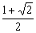
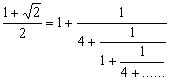

連續分式
程式編寫日期: 2011年1月17日
程式(29 bytes, 使用記憶為A)
?→A: While 1: Fix 0: Rnd( A - . 5:
Norm 1◢ 1 ┘ (A - Ans→A: WhileEnd
註: 連續分式的形式如下:
例題1: 以連續分式表示 π 值。
按 Prog 1 再按 π EXE (顯示3) EXE (顯示7) EXE (顯示15) EXE (顯示1) EXE (顯示292)........
所以答案為

例題2: 以連續分式表示 5/16 值。
按 Prog 1 再按 5 ab/c 16 EXE (顯示0) EXE (顯示3) EXE (顯示5)
EXE (顯示Math ERROR表示計算完結)
所以答案為

例題3: 以連續分式表示 25/16 值。
按 Prog 1 再按 25 ab/c 16 EXE (顯示1) EXE (顯示1) EXE (顯示1) EXE (顯示3)
EXE (顯示2) EXE (顯示Math ERROR表示計算完結)
所以答案為

例題4: 試計算以下算式的連續分式

按 Prog 1 再按 ( 1 + √( 2 ) ) ÷ 2 EXE (顯示1) EXE (顯示4) EXE (顯示1) EXE (顯示4) ....
所以答案為

注意: 輸入的數必須為正數，否則計算將會錯誤。輸入有理數請以分數形式輸入，否則計算可能存在誤差。這個程亦可以計算無理數的連續分式，不過由於計數機的準確度有限，誤差會隨計算的項數而增加，因此較後的項(對整個 數的值影響很少的項)有可能出現錯誤。
返回 CASIO fx-50FH、fx-3650P II、fx-50FH II及fx-50F PLUS 程式集